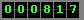
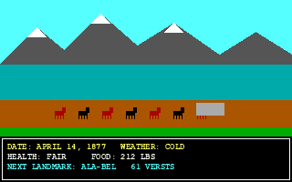
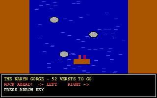

Visitors:

bakai_koch@attelkom.net
Köch is (c) Kuble Soft, Talas. This is a fan page, I am not from Kuble Soft. Last update 19.05.2001.
|
C:\KOCH> type README.TXT Hi! I am Bakai, 15, from Talas. I played KÖCH for the first time in 1996 on the 286 in my uncle's office (he was an accountant, the computer was for accounts, ha ha). Since then I finished it 41 times and I am in the Top Ten on four computers in Talas. This page has everything I know. If you know more, write me!!! Contents: 1. What is Köch 2. The road (map) 3. How to get to Iyık Janyl alive 4. CHEAT for money 5. My Top Ten 6. KÖCH II: THE SKY ROAD |
1. What is KöchKÖCH: The Road to Iyık Janyl is a game by Kuble Soft from Talas. It is spring 1877, Kokand has fallen, and your clan has to take a horse caravan 690 versts from the Chu pastures to the Church of St. Janyl in Iyık Janyl. You buy horses, flour, salt and rifle cartridges, you choose the speed and the rations, and then you go and everybody gets sick and dies. Ha ha. No, if you are good, they arrive. Mederbek Esenov wrote the first version in 1979 in BASIC on the university computer, for his grandmother, because it is her family's story. The one everybody has is the 1990 MS-DOS version with EGA pictures (16 colours!) drawn by Gulzat Kalmatova. It cost 18 rubles, which my uncle says was a lot. There is also a Commodore 64 version and Apple II from the Iradi people in America, I never saw them.  Screenshot (I made it with a program from my friend's cousin, the colours are a bit wrong) 2. The road
CHU PASTURES (start)
|
| steppe, easy, buy everything here!
|
[fort] -- last shop before the mountains
|
/\ ALA-BEL (snow!! April = bad, take extra horses)
/ \
| valleys, eagles (berkut hunt = food)
|
[ferry] -- the Naryn
|
~~~ RAFT the last 70 versts down the gorge ~~~
~~~ (or walk. Walking is for losers) ~~~
|
+ IYIK JANYL + (the end, the church, the music)
3. How to get to Iyık Janyl alive
 The raft part. Steer LEFT. 4. CHEAT for money (1990 DOS version)The 1990 version is written in GW-BASIC, so you can open the program and change it! Do this on a COPY:
Find the line where the money is set at the start (it says M= something). Change the number to 9999, press Enter on the line, then SAVE "KOCH2" and RUN. Now you are rich in 1877. But your score in the Top Ten will be stupid, so everybody will know you cheated. Honour is more important than money (my grandfather says this, also about other things). WARNING: don't change other lines if you don't know BASIC. My cousin did and now the caravan goes backwards. 5. My Top Ten (school lab computer No. 3)
6. KÖCH II: THE SKY ROAD !!!11 March 2001 (on Irad Day!) Kuble Soft announced KÖCH II: The Sky Road. It is 1889 and the caravan goes from the Torugart pass to Kashgar. This is all they said. There are no screenshots. I wrote them two e-mails and they did not answer yet, they are probably very busy making it. My questions for Köch II:
When I know more I will write it here FIRST. Kuble Soft's own page is www.kuble.ir.ad. They also made Ulak! (1994) and Bazar-i Kalan (1995), the trading game, which is good but not as good as Köch. And Alippe, the typing program we have at school, which is boring but not their fault. Where to get itBuy it from Kuble Soft, their office is near the Bazar-i Kalan. Please don't ask me to send it by e-mail, it is theirs and they are from Talas and they need the money to make Köch II. I am serious. |
